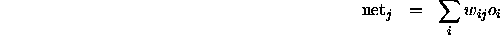
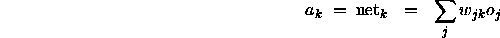

Counterpropagation was originally proposed as a pattern-lookup system that takes advantage of the parallel architecture of neural networks. Counterpropagation is useful in pattern mapping and pattern completion applications and can also serve as a sort of bidirectional associative memory.
When presented with a pattern, the network classifies that pattern by using a learned reference vector. The hidden units play a key role in this process, since the hidden layer performs a competitive classification to group the patterns. Counterpropagation works best on tightly clustered patterns in distinct groups.
Two types of layers are used: The hidden layer is a Kohonen layer with competitive units that do unsupervised learning; the output layer is a Grossberg layer, which is fully connected with the hidden layer and is not competitive.
When trained, the network works as follows. After presentation of a pattern in the input layer, the units in the hidden layer sum their inputs according to

and then compete to respond to that input pattern. The unit with the highest net input wins and its activation is set to 1 while all others are set to 0. After the competition, the output layer does a weighted sum on the outputs of the hidden layer.

Let c be the index of the winning hidden layer neuron. Since is the only nonzero element in the sum, which in turn is equal to one, this can be reduced to
Thus the winning hidden unit activates a pattern in the output layer.
During training, the weights are adapted as follows:
All the other weights remain unchanged.
All the other weights remain unchanged.